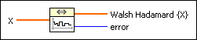
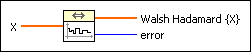
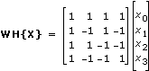
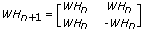
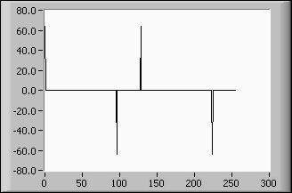

Walsh Hadamard VI
Owning Palette: Transforms VIs
Requires: Full Development System
Computes the real Walsh Hadamard transform of the input sequence X.

 Add to the block diagram Add to the block diagram |
 Find on the palette Find on the palette |
Owning Palette: Transforms VIs
Requires: Full Development System
Computes the real Walsh Hadamard transform of the input sequence X.

| Add to the block diagram |
Find on the palette |
 |
X is an array of power of two length. |
 |
Walsh Hadamard {X} returns the Walsh Hadamard transform of X. |
 |
error returns any error or warning from the VI. You can wire error to the Error Cluster From Error Code VI to convert the error code or warning into an error cluster. |
 | Note The Walsh Hadamard transform has similar properties to the more well-known Fourier transform, but the computational effort is considerably smaller. |
The Walsh Hadamard transform is based on an orthogonal system consisting of functions of only two elements –1 and 1. For the special case of n = 4, the Walsh Hadamard transform of the signal
X = {x0, x1, x2, x3}
can be noted in the following matrix form
.
If WHn and WHn + 1 denote the Walsh Hadamard matrices of dimension 2n and 2n + 1 respectively, the rule is
,
where –WHn is meant in the element wise sense.
| Note The Walsh Hadamard transform fulfills the Convolution Theorem: WH{X*Y} = WH{X}WH{Y}. |
The following diagram shows the Walsh Hadamard transform of a pulse pattern signal of length 256, delay 32, and width 64.
